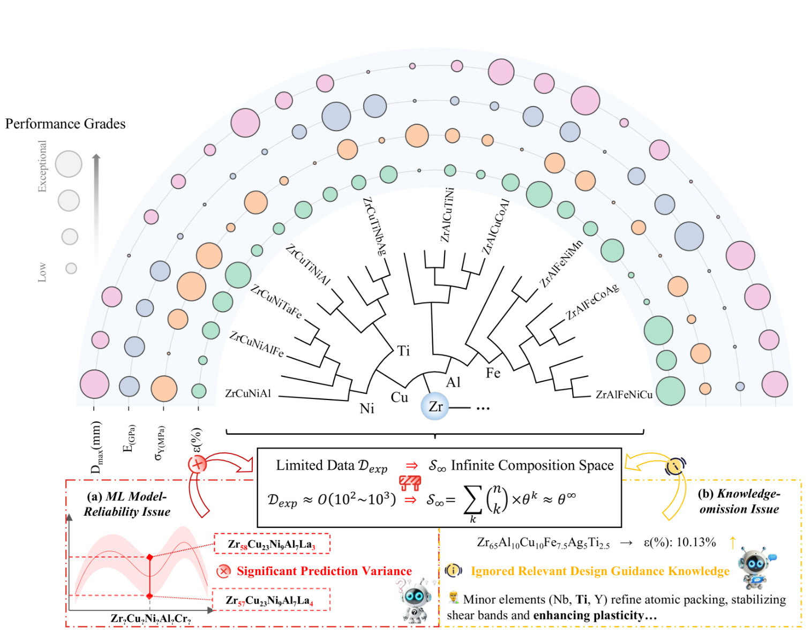

在通往智能材料设计的道路上，一个严峻的现实始终横亘在我们面前——实验数据的极度稀缺。机器学习模型的强大，往往建立在海量、高质量数据的“喂养”之上。但在新材料研发这一探索性极强的领域，我们拥有的实验数据往往只是广阔化学空间中的“沧海一粟”。让AI仅凭这零星的几个“路标”，就在高维、复杂的“数据荒漠”中找到通往“宝藏”的正确路径，其难度可想而知。这导致了当前AI材料设计面临两大核心困境：
- 模型可靠性不足：在稀疏数据上训练的AI模型，其预测往往充满偏差和不确定性，如同一个“罗盘失灵”的导航仪。
- 领域知识的缺失：纯粹的数据驱动方法，忽略了材料科学家们历经百年沉淀下来的宝贵经验和领域规则，使得AI的探索常常显得“缺乏常识”，效率低下。
面对这一挑战，今天介绍的研究，为我们带来了一个极具创新性的解决方案——AIMatDesign。它不再让AI在“数据荒漠”中盲目摸索，而是巧妙地用“知识”武装强化学习（RL），构建了一个更智能、更可靠、更高效的逆向材料设计新范式。
本文亮点速览
- 知识增强的强化学习（RL）新框架：AIMatDesign的核心是一种创新的知识增强RL框架。它系统性地将数据增强、LLM引导的模型精炼和专家领域规则深度整合到RL的决策环路中，旨在解决数据稀缺下的模型可靠性与知识缺失两大难题。
- 从“AI设计”到“实验验证”的成功闭环：该框架不仅在模拟中展现出卓越性能，更成功指导合成了性能超群的新型Zr基块体金属玻璃（BMG），其实测屈服强度高达1.7GPa，延伸率为10.2%，与AI的预测高度吻合，完成了从理论到实践的“最后一公里”验证。
深度解读AIMatDesign：AI是如何“学得又快又好”的？
1. 为什么要做这个？直面数据稀缺下的“可靠性”与“知识”双重危机
让AI在仅有数百个实验数据点的基础上，去探索一个拥有几乎无限可能性的高维材料组成空间，其难度不言而喻。论文通过一个具体的案例——Zr基块体金属玻璃（BMG）的设计，揭示了现有方法的两大痛点：

- 模型可靠性问题：在稀疏数据上训练的预测模型，其预测结果方差很大，在优化的某些阶段可能会给出非常离谱的指导，导致RL智能体“误入歧途”。
- 知识忽略问题：纯粹的数据驱动模型无法利用那些已知的、宝贵的领域知识。例如，材料学家熟知“在Zr基BMG中添加Ti元素有助于提高塑性”，但如果训练数据中缺乏这样的样本，AI可能永远也学不会这个“常识”，导致其预测结果存在系统性偏差。
AIMatDesign的提出，正是为了系统性地解决这两个问题，让AI不仅能“看懂”数据，更能“理解”知识。
2. 本文的方法是什么？AIMatDesign的“三板斧”
AIMatDesign的核心是一个基于强化学习（RL）的逆向设计框架。RL智能体通过不断地“尝试”新的材料配方（动作），并从一个“虚拟设计环境”中获得反馈（奖励），来逐步学习如何设计出性能更优的材料。而AIMatDesign的“三板斧”，正是为了让这个学习过程更高效、更可靠。
- 第一板斧：可信经验池（TEP）——让“兵马”未动，“粮草”先行
- 应对挑战：RL的冷启动需要大量“经验”数据，但实验数据太少怎么办？
- 方法：AIMatDesign采用了一种巧妙的基于差异的数据增强策略。它不再满足于已有的几百个数据点，而是通过计算任意两个真实数据点之间的“差异”（例如，配方A - 配方B = 动作C），来生成数万乃至数百万个全新的、具有物理意义的“经验”样本（即“在状态A执行动作C会得到状态B”）。这些源于真实数据的“经验”构成了一个可信经验池（TEP），为RL智能体在训练初期提供了海量、可靠的“教科书”，显著加速了其学习和收敛速度。
- 第二板斧：自动模型精炼（AMR）——给AI配个“LLM监督员”
- 应对挑战：RL智能体依赖的内部预测模型（用于评估材料性能）可能会“跑偏”，怎么办？
- 方法：AIMatDesign引入了一个由LLM驱动的自动模型精炼（AMR）机制（如原文Fig. 4所示）。在RL训练过程中，系统会实时监测预测模型的“健康状况”——在训练早期，监测其预测方差，如果方差过大（说明模型对某些区域不确定），则触发AMR；在训练中期，监测其预测的奖励与RL智能体的价值判断之间的相关性，如果两者不一致（说明模型“说一套做一套”），也触发AMR。一旦触发，LLM就会介入，像一位专家一样，从候选特征库中选择1-3个新的、与材料物理性质相关的特征，加入到预测模型中，并对其进行重新训练，从而动态地“修正”和“校准”这个导航罗盘。
- 第三板斧：基于知识的奖励（KBR）——让AI的探索更“懂行”
- 应对挑战：如何将专家的“经验之谈”融入AI的决策过程？
- 方法：AIMatDesign创新性地将材料科学的专家规则直接整合到RL的奖励函数中。在RL训练的后期（当AI已经探索到一些比较有希望的区域时），LLM会再次出场，像一位“评审专家”，根据其内置的材料学知识库，对AI提出的新配方进行评估，并给出一个“知识分”。这个分数会作为一个额外的奖励信号，引导AI朝着更符合领域知识和物理规律的方向进行最终的精细优化。
3. 实验结果怎么样？从模拟到现实的全面胜利
- 模拟中的卓越性能：在与传统优化方法（网格搜索、NSGA-II）和多种主流RL算法（DQN, DDPG, TD3, SAC, PPO）的对比中，AIMatDesign在新材料发现速度、设计准确性和最终成功率等多个维度上均表现出显著优势。例如，其最终任务成功率（SR_done）达到了50.32%，是传统进化算法NSGA-II（14.71%）的3.4倍（参考原文Table 2）。训练过程的奖励曲线（原文Fig. 8）也清晰地展示了TEP、AMR和KBR三个核心组件对加速收敛和提升性能的关键作用。
- 真实的实验验证——AI设计的合金，性能超群！
这篇论文最“硬核”的部分，在于它没有止步于计算机模拟。研究团队根据AIMatDesign的预测，选择了两个Zr基BMG体系进行真实的实验合成与性能测试。
- 预测与实验高度吻合：实验结果（如原文Fig. 11所示）显示，AI预测的屈服强度趋势与实验测量结果惊人地一致，平均相对误差仅为4.9%。
- 发现高性能新材料：其中一款由AI设计的Zr₆₃Cu₁₅Al₁₀Ni₁₀Fe₂合金，经实验验证，其屈服强度高达1.7GPa，同时保持了10.2%的优异塑性延伸率，是一种综合性能卓越的新型块体金属玻璃。
这个从AI设计到实验验证的成功闭环，无可辩驳地证明了AIMatDesign框架的实际有效性和工程可行性。
客观评价：这项研究的价值、启示与思考
《AIMatDesign》为我们展示了一个在数据稀缺这一普遍性科研难题下，如何通过深度融合领域知识与先进AI算法，实现高效、可靠逆向材料设计的典范。
- 值得学习之处：
- 系统性解决问题的框架思维：AIMatDesign并非依赖单一技术“一招鲜”，而是通过TEP、AMR、KBR三个模块，系统性地、有针对性地解决了数据稀疏下的“经验不足”、“模型跑偏”和“缺乏常识”三大问题。
- LLM角色的创新性应用：它巧妙地将LLM定位为一个高层次的“知识注入者”和“智能监督者”，而非底层的执行者。这种角色定位，充分利用了LLM强大的知识整合和逻辑推理能力，来引导和修正更擅长数值优化的RL模型，实现了AI能力间的优势互补。
- 从数据中“创造”数据：基于差异的数据增强策略，是从有限真实数据中“榨取”最大价值的绝佳范例，对于所有面临数据稀缺问题的AI for Science研究都极具启发性。
- 思考与展望：
正如作者在结论中指出的，这项工作为下一代智能材料设计奠定了坚实的基础。未来的方向将是把该框架扩展到更复杂的多目标、多尺度设计问题，并通过整合高通量实验平台和实时反馈机制，构建真正的自适应闭环设计流程。此外，将其应用到电池材料、高熵合金等其他先进材料领域，也将是验证其通用性的重要一步。
结语
总而言之，AIMatDesign的出现，让我们看到AI在面对“数据荒漠”时，不再是束手无策。通过为AI注入“知识”，赋予其“自省”和“修正”的能力，我们能够构建出更智能、更可靠的科研伙伴。这项工作不仅为材料科学界带来了一种强大的逆向设计新工具，更为整个AI for Science领域如何克服数据瓶颈、实现知识与数据驱动的深度融合，提供了深刻的洞见和宝贵的实践经验。